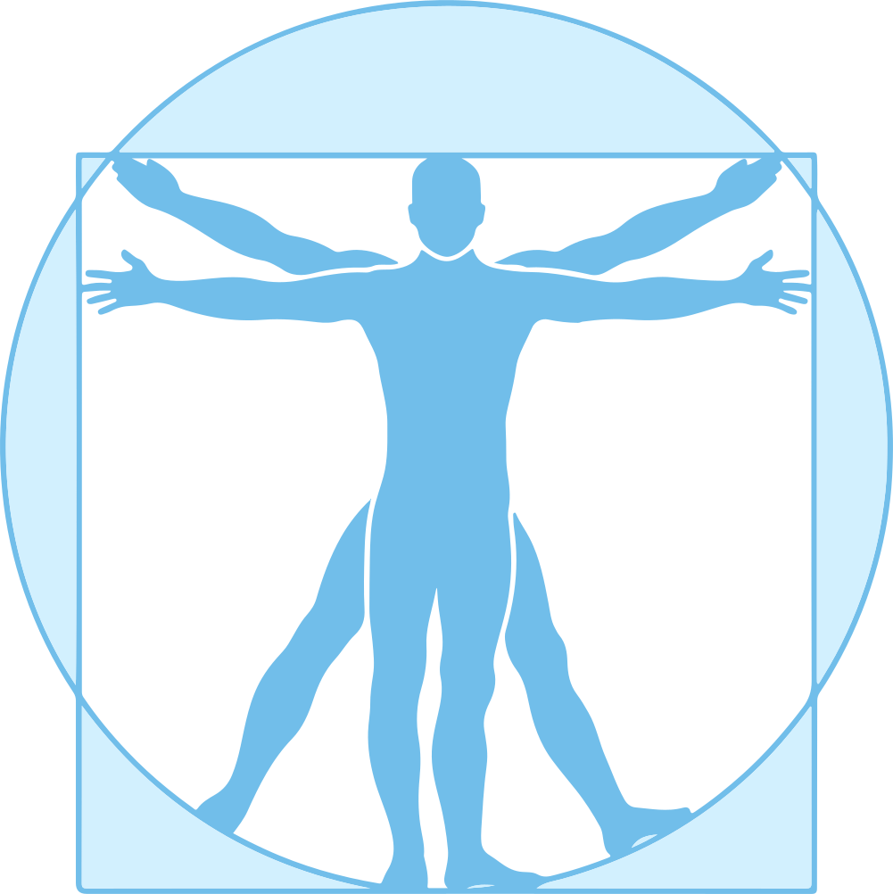

<nav class="fixed top-0 w-full z-50">
  <mat-sidenav-container class="sidenav-container">
    <mat-sidenav
      #drawer
      class="sidenav"
      fixedInViewport="true"
      [attr.role]="(isHandset$ | async) ? 'dialog' : 'navigation'"
      [mode]="(isHandset$ | async) ? 'over' : 'side'"
      [opened]="(isHandset$ | async) === false"
    >
      <div class="flex items-center justify-between">
        <mat-toolbar>Menu</mat-toolbar>
      </div>
      <mat-nav-list *ngFor="let link of links; index as index">
        <a mat-list-item href="{{ link.path }}">{{ link.name }}</a>
      </mat-nav-list>
      <button mat-raised-button color="accent" class="font-bold uppercase">
        <a href="">Get Started</a>
      </button>
    </mat-sidenav>
    <mat-sidenav-content>
      <mat-toolbar color="primary" class="flex items-center justify-between">
        <div class="flex items-center space-x-4">
          
          <a routerLink="/" class="">Total Systems</a>
        </div>
        <div class="xl:flex space-x-4 hidden">
          <div *ngFor="let link of links; index as index" class="">
            <a
              [routerLink]="link.path"
              routerLinkActive="active"
              class="text-sm uppercase hover:text-sky-400"
              >{{ link.name }}</a
            >
          </div>
        </div>

        <div class="xl:block hidden">
          <button mat-raised-button color="accent" class="font-bold uppercase">
            <a href="">Get Started</a>
          </button>
        </div>

        <button
          type="button"
          aria-label="Toggle sidenav"
          mat-icon-button
          (click)="drawer.toggle()"
          *ngIf="isHandset$ | async"
        >
          <mat-icon aria-label="Side nav toggle icon">menu</mat-icon>
        </button>
      </mat-toolbar>
    </mat-sidenav-content>
  </mat-sidenav-container>
</nav>
